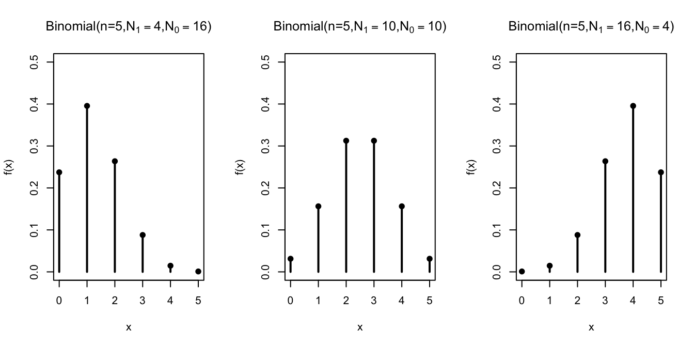
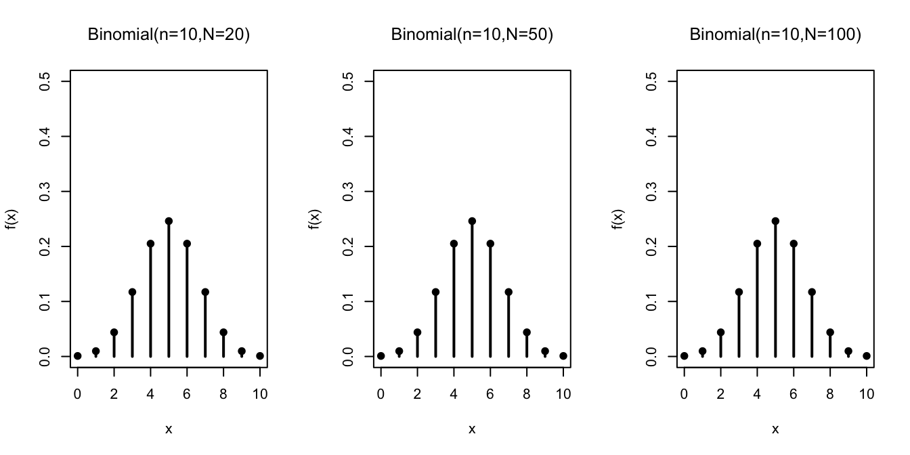

Lesson 13 Binomial Distribution
Motivating Example
In 1693, Samuel Pepys (who is best remembered today for his diary) wrote a letter to Isaac Newton inquiring about a wager that Pepys was planning to make. Pepys wanted to know which of the following events had the highest probability of occurring.
A. 6 dice are thrown and at least 1 is a ⚅
B. 12 dice are thrown and at least 2 are ⚅s
C. 18 dice are thrown and at least 3 are ⚅s
Pepys thought that C had the highest probability, but Newton disagreed.
The probability of A is straightforward to calculate. We use the Complement Rule (Theorem 5.2), much like we did in the Chevalier de Méré example from Lesson 5. \[\begin{align*} P(\text{at least 1 ⚅ in 6 rolls}) &= 1 - P(\text{0 ⚅s in 6 rolls}) \\ &= 1 - \frac{5^6}{6^6} \\ &\approx .665 \end{align*}\]
However, the probabilities of the other two events are trickier to calculate. For example, it is not obvious how to count the number of ways to get exactly 2 sixes in 18 dice rolls. In this lesson, we learn how this is done.
Theory
In this lesson, we learn another named distribution that is virtually identical to the hypergeometric distribution, except in one important detail: the draws are made with replacement instead of without replacement.
Theorem 13.1 (Binomial Distribution) If a random variable can be described as the number of \(\fbox{1}\)s in \(n\) random draws, with replacement, from the box \[ \overbrace{\underbrace{\fbox{0}\ \ldots \fbox{0}}_{N_0}\ \underbrace{\fbox{1}\ \ldots \fbox{1}}_{N_1}}^N, \] then its p.m.f. is given by \[\begin{equation} f(x) = \dfrac{\binom{n}{x} N_1^x N_0^{n-x}}{N^n}, x=0, ..., n, \tag{13.1} \end{equation}\] where \(N = N_1 + N_0\) is the number of tickets in the box.
We say that the random variable has a \(\text{Binomial}(n, N_1, N_0)\) distribution, and \(n\), \(N_1\), \(N_0\) are called parameters of the distribution.
Equivalently, (13.1) can be written as \[\begin{equation} f(x) = \binom{n}{x} p^x (1 - p)^{n-x}, x=0, ..., n, \tag{13.2} \end{equation}\] where \(p = N_1 / N\) is the proportion of \(\fbox{1}\)s in the box.We will derive the formulas (13.1) and (13.2) later in this lesson. For now, let’s see how these formulas allow us to bypass calculations.
Example 13.1 (The Newton-Pepys Problem) Let’s model each die roll as a draw from a box. Each die has \(6\) equally likely outcomes, so we place \(N=6\) tickets into the box. Since we are only interested in the number of ⚅s, we will label only one these tickets \(\fbox{1}\), corresponding to a ⚅; the other five tickets will be labeled \(\fbox{0}\).
\[ \fbox{$\fbox{1}\ \fbox{0}\ \fbox{0}\ \fbox{0}\ \fbox{0}\ \fbox{0}$} \]
To model 12 rolls of the die, we draw \(n=12\) tickets with replacement. We draw with replacement so that the outcome of one die roll does not affect the outcome of another. In other words, we want the dice rolls to be independent, and drawing with replacement is the only way to model independence. The number of \(\fbox{1}\)s in these 12 draws represents the number of ⚅s that one would get in 12 rolls of a fair die.
Therefore, by Theorem 13.1, we now know that the number of ⚅s in 12 rolls follows a \(\text{Binomial}(n=12, N_1=1, N_0=5)\) distribution. We can now write down the p.m.f. by plugging the values of the parameters \(n\), \(N_1\), \(N_0\) into (13.1): \[ f(x) = \frac{\binom{12}{x} 1^x 5^{12-x}}{6^{12}}, x=0, 1, \ldots, 12. \]
Equivalently, we have \(p = N_1/N = 1/6\), and plugging in the values of the parameters \(n\) and \(p\) into (13.2), we have: \[ f(x) = \binom{12}{x} \left(\frac{1}{6}\right)^x \left(\frac{5}{6} \right)^{12-x}, x=0, 1, \ldots, 12. \]
Both formulas should produce the same probabilities. To answer Pepys’ question about the probability of getting at least 2 ⚅s in 12 rolls, we combine the binomial distribution with the complement rule, \[\begin{align*} P(X \geq 2) &= 1 - P(X \leq 1) \\ &= 1 - (f(0) + f(1)) \\ &= 1 - \binom{12}{0} \left(\frac{1}{6}\right)^0 \left(\frac{5}{6} \right)^{12} - \binom{12}{1} \left(\frac{1}{6}\right)^1 \left(\frac{5}{6} \right)^{11} \\ &= 1 - \left(\frac{5}{6} \right)^{12} - 12 \left(\frac{1}{6}\right) \left(\frac{5}{6} \right)^{11} \\ &\approx .6187. \end{align*}\]Now, let’s derive the p.m.f. of the binomial distribution.
Proof (Theorem 13.1). To calculate the p.m.f. at \(x\), we need to calculate the probability of getting exactly \(x\) \(\fbox{1}\)s in \(n\) draws.
First, there are \(N^n\) ordered ways to draw \(n\) tickets from \(N\) with replacement. (We must count ordered outcomes because the unordered outcomes are not all equally likely. See Lesson 4.)
Next, we count the outcomes that have exactly \(x\) \(\fbox{1}\)s. We proceed in two steps:
Count outcomes that look like \[\begin{equation} \underbrace{\fbox{1}, \ldots, \fbox{1}}_{x}, \underbrace{\fbox{0}, \ldots, \fbox{0}}_{n-x}, \tag{13.3} \end{equation}\] where the \(x\) \(\fbox{1}\)s are drawn first. There are \(N_1\) choices for the first \(\fbox{1}\), \(N_1\) choices for the second \(\fbox{1}\), and in fact, \(N_1\) choices for each of the \(x\) \(\fbox{1}\)s, since we are drawing with replacement. Likewise, there are \(N_0\) choices for each of the \(n-x\) \(\fbox{0}\)s. By the multiplication principle of counting (Theorem 1.1), there are \[\begin{equation} N_1^x \cdot N_0^{n-x}. \tag{13.4} \end{equation}\] ways to get an outcome like (13.3), in that exact order.
Account for the possibility that the \(\fbox{1}\)s and \(\fbox{0}\)s were drawn in a different order than (13.3). There are \(\binom{n}{x}\) ways to rearrange the \(\fbox{1}\)s and \(\fbox{0}\)s.
So the total number of (ordered) ways to get \(x\) \(\fbox{1}\)s and \(n-x\) \(\fbox{0}\)s is \[ \binom{n}{x} \cdot N_1^x \cdot N_0^{n-x}. \]
Dividing this by the total number of outcomes \(N^x\) gives the p.m.f.: \[ f(x) = P(X = x) = \frac{\binom{n}{x} \cdot N_1^x \cdot N_0^{n-x}}{N^n}. \]
To see that this formula is the same as (13.2), we write \(N^n = N^x \cdot N^{n-x}\). Then, we have: \[\begin{align*} f(x) &= \binom{n}{x}\frac{N_1^x \cdot N_0^{n-x}}{N^x \cdot N^{n-x}} \\ &= \binom{n}{x} \left( \frac{N_1}{N} \right)^x \left( \frac{N_0}{N} \right)^{n-x} \\ &= \binom{n}{x} p^x (1 - p)^{n-x}, \end{align*}\] where in the last line, we used the fact that \(\frac{N_0}{N} = \frac{N - N_1}{N} = 1 - \frac{N_1}{N} = 1 - p\).Visualizing the Distribution
Let’s graph the binomial distribution for different values of \(n\), \(N_1\), and \(N_0\).
First, we hold the number of draws constant at \(n=5\) and vary the composition of the box.

The distribution shifts, depending on the composition of the box. The more \(\fbox{1}\)s there are in the box, the more \(\fbox{1}\)s in the sample.
Next, we study how the distribution changes as a function of \(n / N\), the relative fraction of draws we make from the box. For all of the graphs below, \(N_1 = N_0 = N/2\). 
In contrast to the hypergeometric distribution, the binomial distribution does not change when we vary the number of tickets in the box, as long as we keep the relative proportions of \(\fbox{1}\)s and \(\fbox{0}\)s the same. This makes sense because we are drawing with replacement, so it does not matter how many draws we make; the box always looks the same.
The binomial distribution is indifferent to the exact number of tickets \(N\) in the box.
For example, to model a coin toss, we could use
\[ \displaystyle \fbox{\(\fbox{1}\ \fbox{0}\)} \] or \[ \displaystyle \fbox{\(\fbox{1}\ \fbox{1}\ \fbox{0}\ \fbox{0}\)}. \] Although the first box may be more natural, the second box is equally valid. Any box with the same number of \(\fbox{1}\)s as \(\fbox{0}\)s can be used to model a coin toss, since they all guarantee a 50% chance of drawing a \(\fbox{1}\). The fact that the binomial distribution does not depend on \(N\) should not be surprising in light of (13.2), which shows that the binomial p.m.f. can be written solely in terms of \(p = N_1 / N\), the proportion of \(\fbox{1}\)s in the box.
Calculating Binomial Probabilities on the Computer
Calculating binomial probabilities by hand can be unwieldy when \(n\) is large. Fortunately, the binomial distribution is built into many software packages.
For example, suppose we want to solve the following problem.Example 13.2 (Parity Checks) Messages that are exactly 50-bits long are regularly sent over a noisy communication channel. Each bit has a 1% chance of being corrupted by the channel. That is, the receiver saw a \(0\) where the original message had a \(1\), and vice versa. Each bit is corrupted independently of any other bit.
To help detect errors, a 51st bit, called a parity bit, is sent along with the message. This bit is chosen to make the sum of all 51 bits come out to an even integer. When the receiver receives the message, she can calculate the sum of all 51 bits herself. If the sum is odd, then she knows that the message has been corrupted and can ask the sender to resend the message. This is called a parity check.
The parity check works if exactly one bit is corrupted. However, if exactly two bits are corrupted, then the sum of all 51 bits will be even, and hence the receiver will not detect the error. In general, errors will not be detected if an even number of bits are corrupted.
What is the probability that a corrupted message goes undetected?Solution. First, we will set up a box model for the number of corrupted bits. We have a box with
- \(N_0 = 99\) tickets labeled \(\fbox{0}\)
- \(N_1 = 1\) tickets labeled \(\fbox{1}\)
to represent the 1% chance that each bit is corrupted. We will draw 51 times from this box to represent the 51 bits in the message. We draw with replacement, since the bits are corrupted independently. Now, the number of \(\fbox{1}\)s in the 51 draws corresponds to the number of corrupted bits.
Therefore, we know that the number of corrupted bits, which we will call \(X\), follows a \(\text{Binomial}(n=51, N_1=1, N_0=99)\) distribution.
The probability that a corrupted message goes undetected is the probability that \(X\) is positive and even. (If \(X=0\), then the message was not corrupted in the first place. If \(X\) is odd, then the error will be caught by the parity check.) To calculate this probability, we sum the p.m.f. over the relevant values: \[\begin{align*} P(\text{corrupted message goes undetected}) &= P(\text{$X$ is positive and even}) \\ &= f(2) + f(4) + f(6) + \ldots + f(50) \end{align*}\] This requires evaluating the p.m.f. at 25 different values! This is a job for a computer, not a human.Here’s how we would calculate the probability using the Python library Symbulate.
We first specify the parameters of the binomial distribution. Note that Symbulate requires that the parameters
be \(n\) and \(p\), so we have to convert \(N_1=1, N_0=99\) into \(p = 0.01\). Then, we create a list of the positive even
values and evaluate the p.m.f. at all of these values, in one fell swoop, using the .pmf() method.
## array([7.79174480e-02, 1.55818996e-03, 1.14573571e-05, 4.13324569e-08,
## 8.46244910e-11, 1.07274277e-13, 8.91255091e-17, 5.04689904e-20,
## 2.00253338e-23, 5.67792557e-27, 1.16616574e-30, 1.75027722e-34,
## 1.92868014e-38, 1.56177790e-42, 9.26787459e-47, 4.00356955e-51,
## 1.24511721e-55, 2.74244677e-60, 4.17928311e-65, 4.26413949e-70,
## 2.77920480e-75, 1.07909959e-80, 2.23393269e-86, 2.02064767e-92,
## 5.04900000e-99])To add these probabilities, we call sum():
## 0.07948713677652883You can play around with the Python code in this Colab notebook.
It is also possible to do this calculation in R, a statistical programming language.
Note that R uses the names size= and prob= for \(n\) and \(p\), respectively. We create a list of the
positive even integers from 2 to 51, and evaluate the binomial p.m.f. at these values.
## [1] 7.791745e-02 1.558190e-03 1.145736e-05 4.133246e-08 8.462449e-11
## [6] 1.072743e-13 8.912551e-17 5.046899e-20 2.002533e-23 5.677926e-27
## [11] 1.166166e-30 1.750277e-34 1.928680e-38 1.561778e-42 9.267875e-47
## [16] 4.003570e-51 1.245117e-55 2.742447e-60 4.179283e-65 4.264139e-70
## [21] 2.779205e-75 1.079100e-80 2.233933e-86 2.020648e-92 5.049000e-99To add these probabilities, we call sum():
## [1] 0.07948714You can play around with the R code in this Colab notebook.
Essential Practice
- Show Mr. Pepys that C (at least 3 ⚅s in 18 rolls) is actually the least likely of the three options.
- About 10% of passengers who are scheduled to take a particular flight fail to show up. For this reason, airlines overbook flights, selling more tickets than they have seats, with the expectation that they will have some no shows. An airline with seating for 100 passengers sells 110 tickets for the flight. What is the probability that they will have enough seats for all the passengers for all of the passengers who show up for the flight? (Assume that passengers independently show up for the flight. Can you think of a situation where this would not be a reasonable assumption?)
In the World Series of baseball, two teams (call them A and B) play a sequence of games against each other, and the first team to win four games wins the series. Suppose team \(A\) is slightly better, with a \(0.6\) probability of winning each game, and assume the games are independent. What is the probability that team \(A\) wins the series?
(Hint: After 7 games, one of the teams must have won the Series. Even though the teams only play until one team has won four games, this calculation is easiest if you assume that the teams always play 7 games.)
Additional Exercises
- In the carnival game chuck-a-luck, three dice are rolled. You can make a bet on a particular number (1, 2, 3, 4, 5, 6) showing up. The payout is 1 to 1 if that number shows on (exactly) one die, 2 to 1 if it shows on two dice, and 3 to 1 if it shows up on all three. (You lose your initial stake if your number does not show on any of the dice.) If you make a $1 bet on the number three, what is the distribution of the amount you win? (Hint: The random variable is not binomial but very closely related to a binomial. You can should be able to write the p.m.f. as a table.)